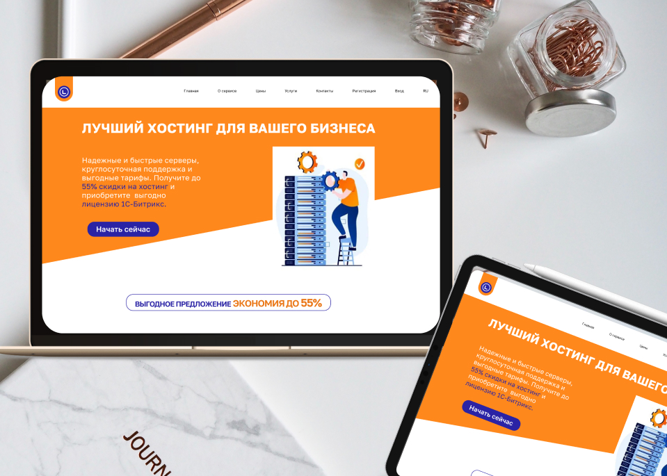
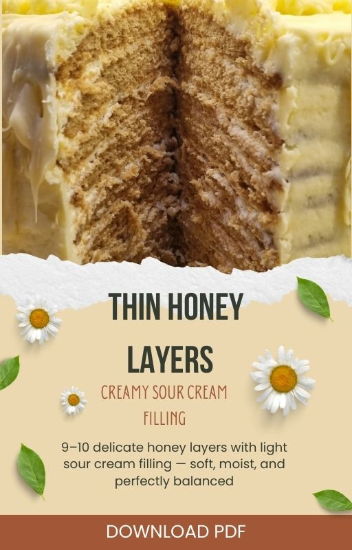
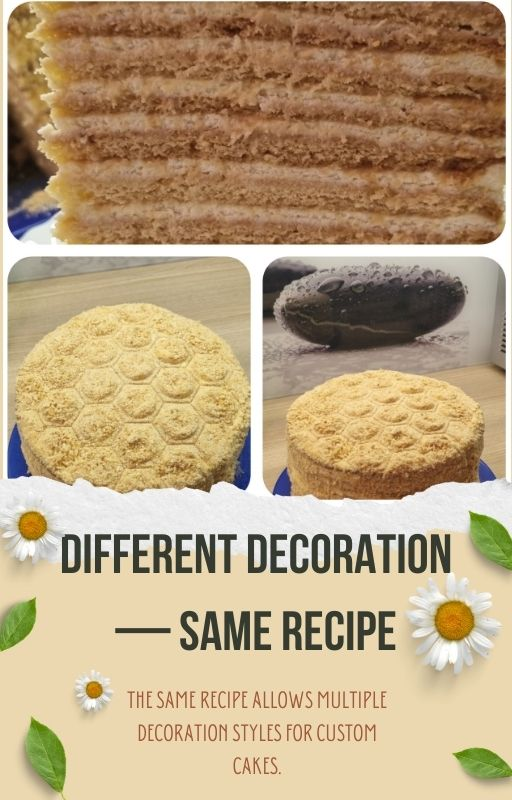
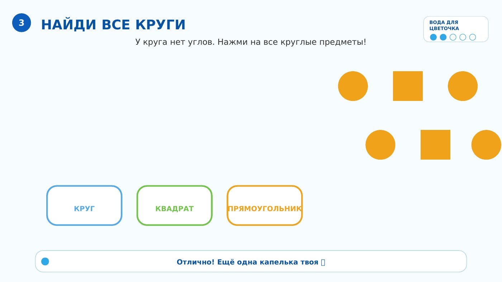
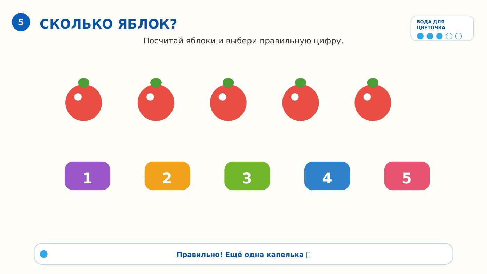
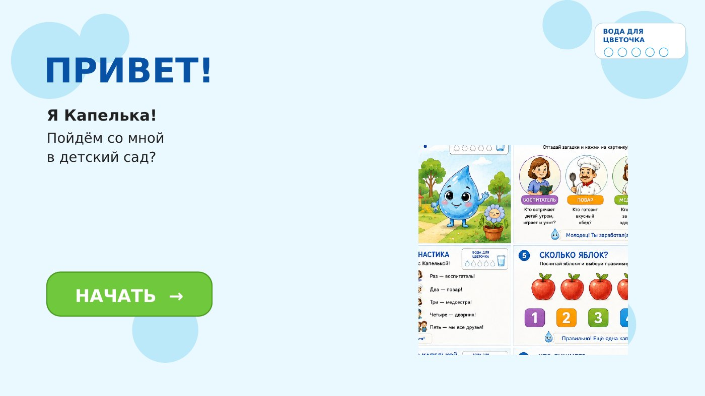
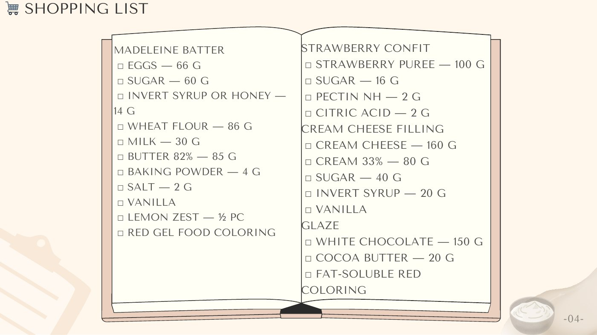
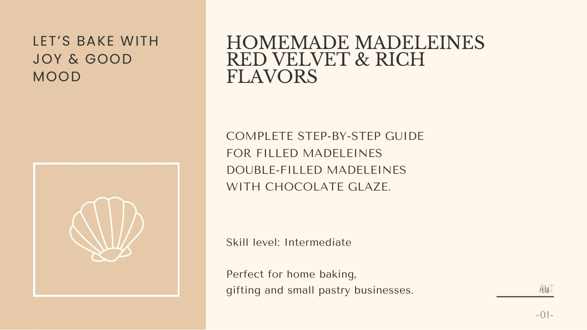

ASP.NET Core · Web Design
Zaparz.to
Tea & coffee storefront, customer accounts, and an editorial journal.
View ProjectDesign & Development
Websites, interfaces, visual identities, and interactive presentations.
14 projects
ASP.NET Core · Web Design
Tea & coffee storefront, customer accounts, and an editorial journal.
View Project

Tailwind CSS · Alpine.js · Flowbite
Responsive storefront and admin interfaces for a bicycle and scooter shop.
View Project
Laravel · Tailwind CSS
A parish website with schedules, news, and community services.
View Project

HTML · Tailwind CSS · JavaScript
An interface for tracking orders and production stages.
View Project
Client Project · Figma
A Figma website design for a birch plywood and wood products manufacturer.
View Project
Website Design · Figma
A website concept presenting hosting plans and 1C-Bitrix licenses.
View Project
Client Project · Figma
Three A4 promotional flyer concepts for a business assistance service.
View Project
Academic Project · Photoshop
Typography and composition studies for music and seasonal campaigns.
View ProjectAcademic Project · Illustrator
Identity studies exploring lettering, contrast, and composition.
View ProjectAcademic Project · Illustrator
A coordinated set of four outdoor activity pictograms.
View Project


Graphic Design · Social Media Design
A four-card visual series about honey cake, its layers, and decoration.
View Project
Graphic Design · Visual Identity
Brand visuals, social covers, a draft leaflet, and loyalty-card concepts.
View Project


Interactive HTML · Educational Design
An interactive ten-slide presentation with activities for children.
View Project


Editorial Design & Educational Materials
A coordinated series of illustrated recipe guides for madeleines and Medovik cake.
View Project